A & G
inserisci la password
Password errata. Riprova!
3 · luglio · 2027
Benvenuti nel sito del nostro matrimonio.
Scorri per scoprire tutti i dettagli.
in 15 scatti, scorri a destra per vederli
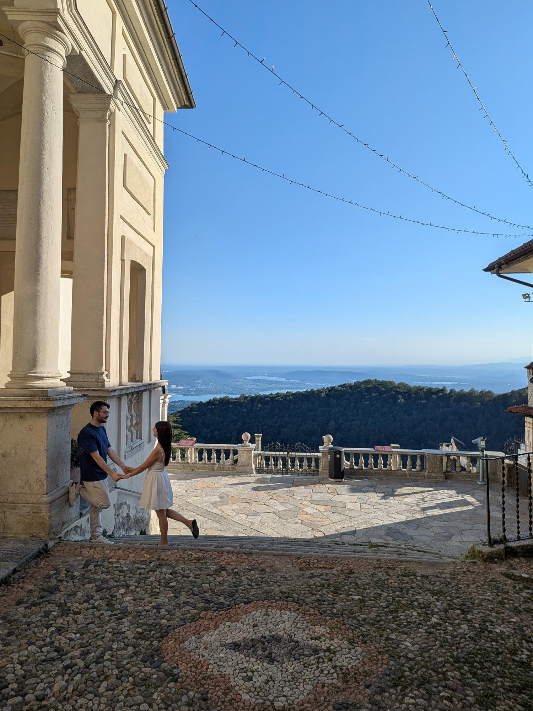
Il Sacro Monte, dove ci sposeremo
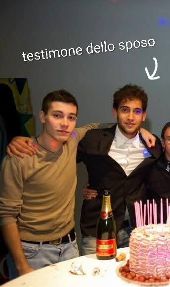
Il testimone dello sposo, da sempre
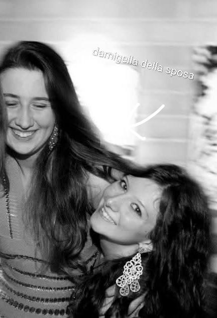
La damigella della sposa, da sempre
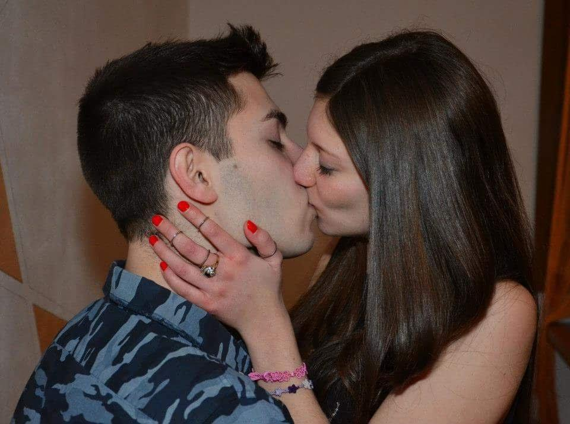
I primi tempi
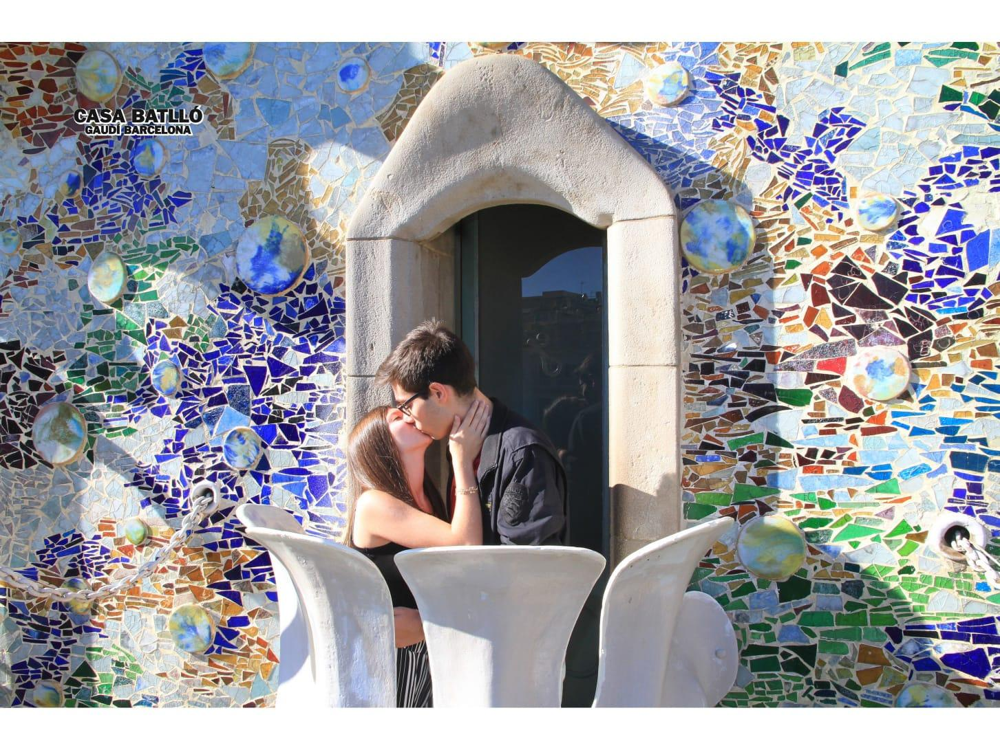
Barcellona
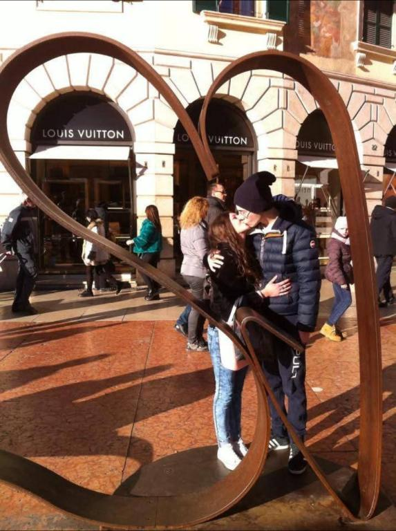
Verona, il primo cuore
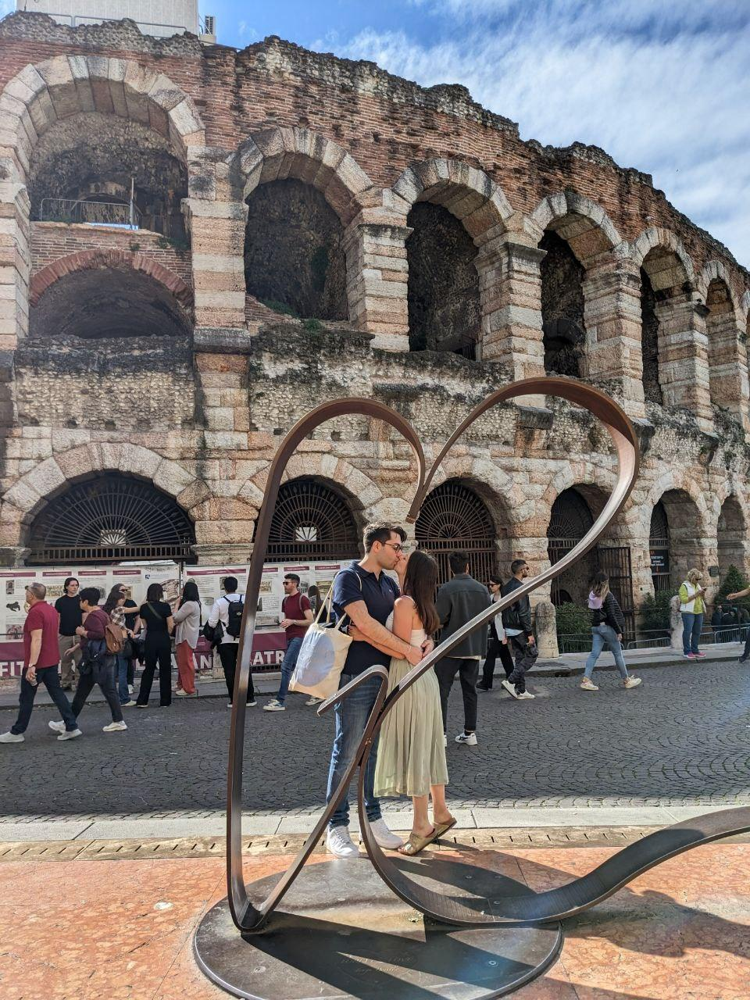
Verona, lo stesso cuore anni dopo
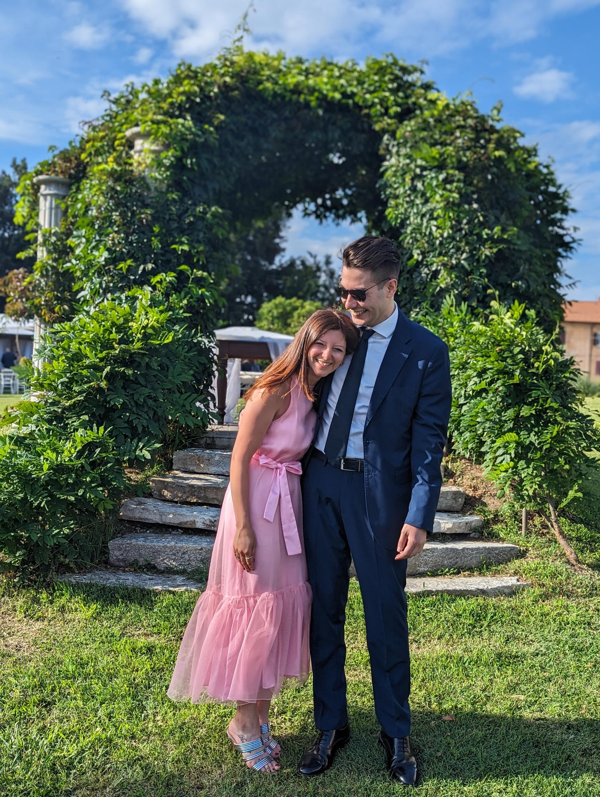
Ai matrimoni degli altri
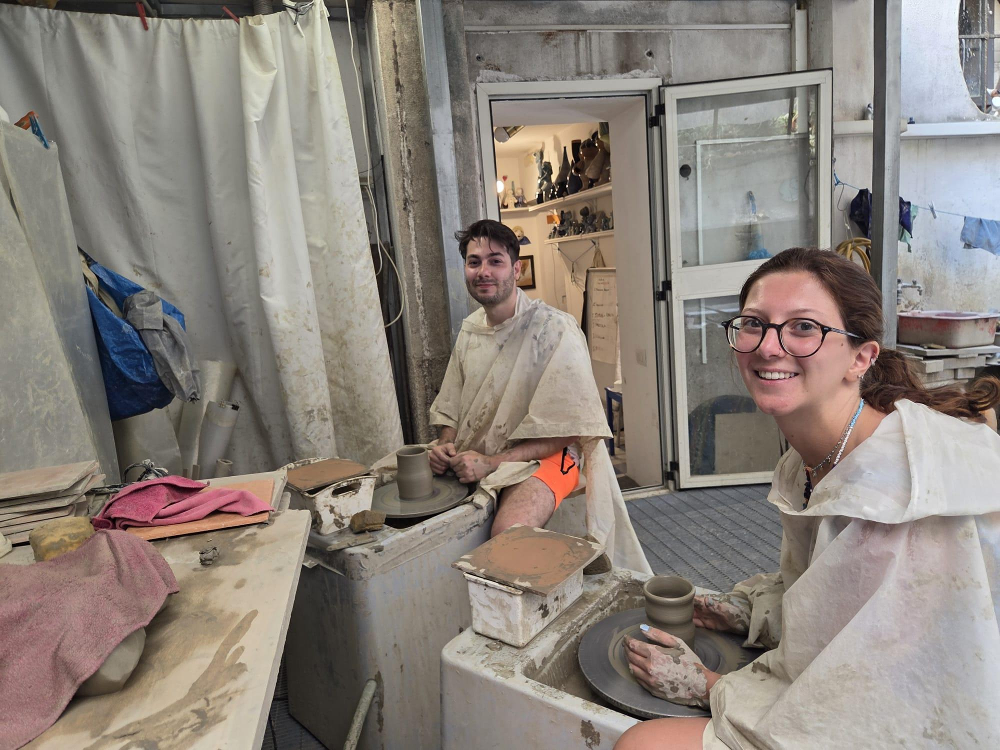
A lezione di ceramica
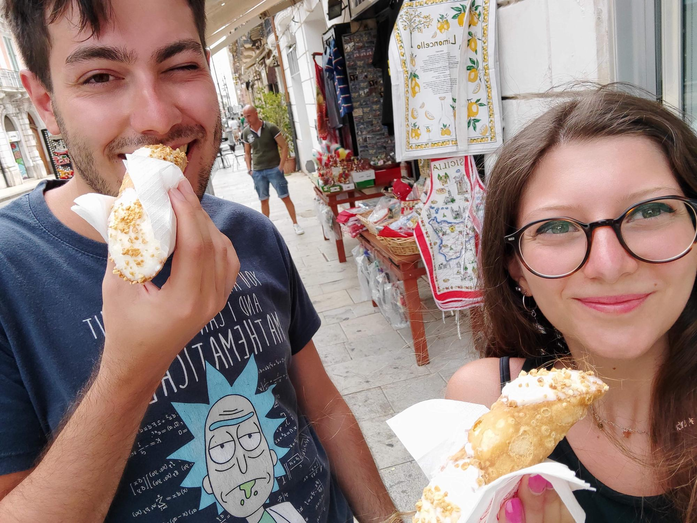
Cannoli e Sicilia
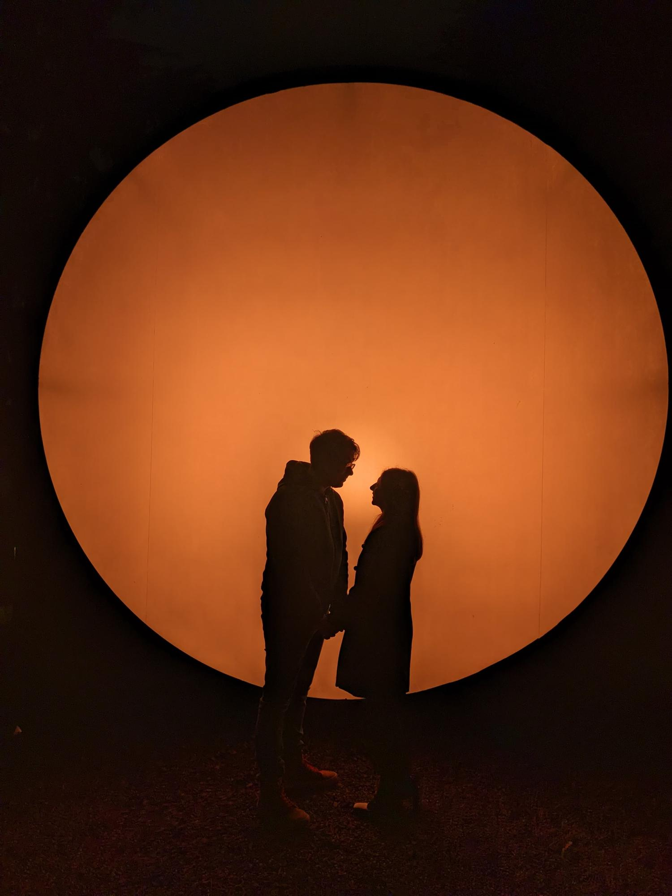
Controluce
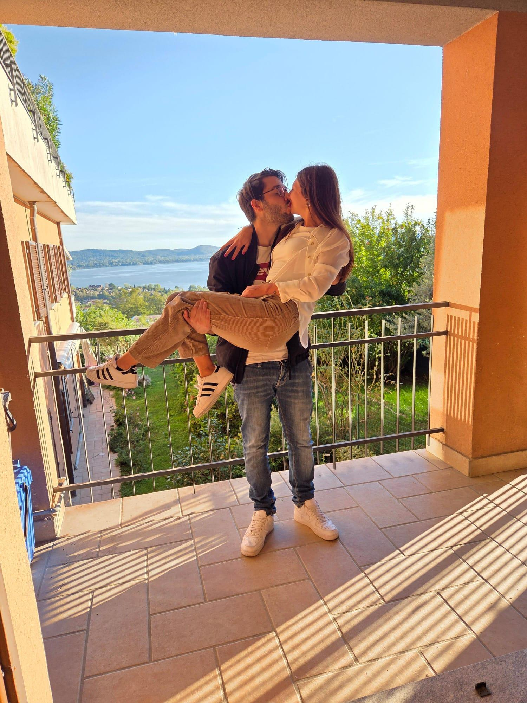
Il lago da casa
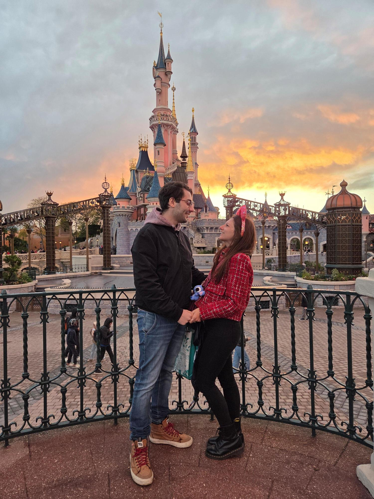
Disneyland Paris
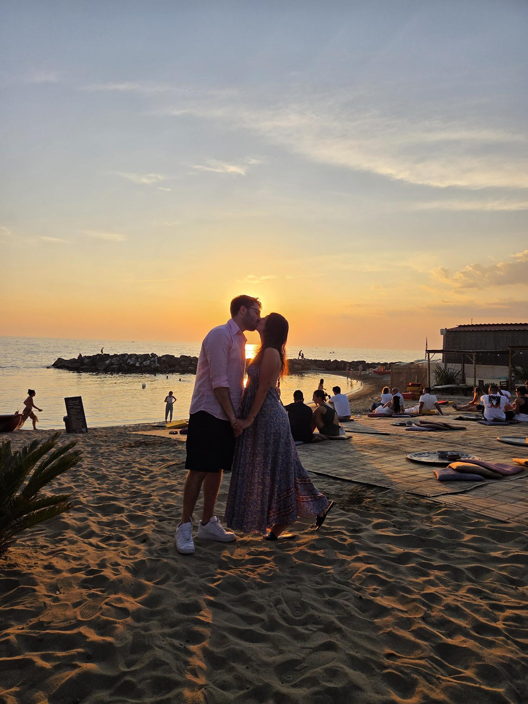
Un tramonto sul mare
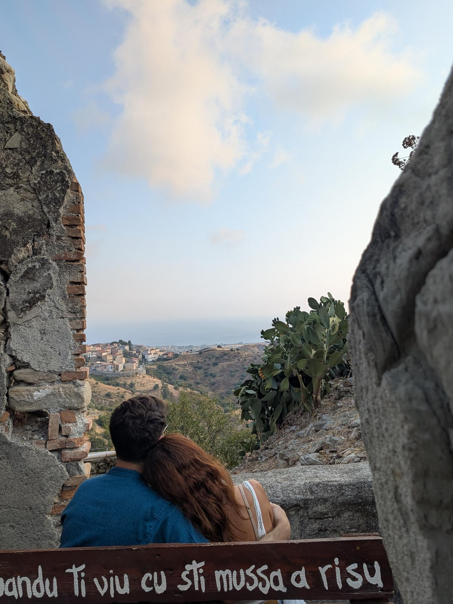
Quandu ti viu cu sti mussa a risu
Cerimonia · ore 14:30
Santuario di Santa Maria del Monte
Varese
Ricevimento
Villa Borghi · Varano Borghi, VA
Per pernottare contatta la reception di Villa Borghi.
?
Quanto ci conosci davvero?
Il quiz sarà disponibile prossimamente!
il vostro dono più bello
Stiamo preparando la lista nozze e i dettagli del viaggio di nozze.
Il sogno prende forma...